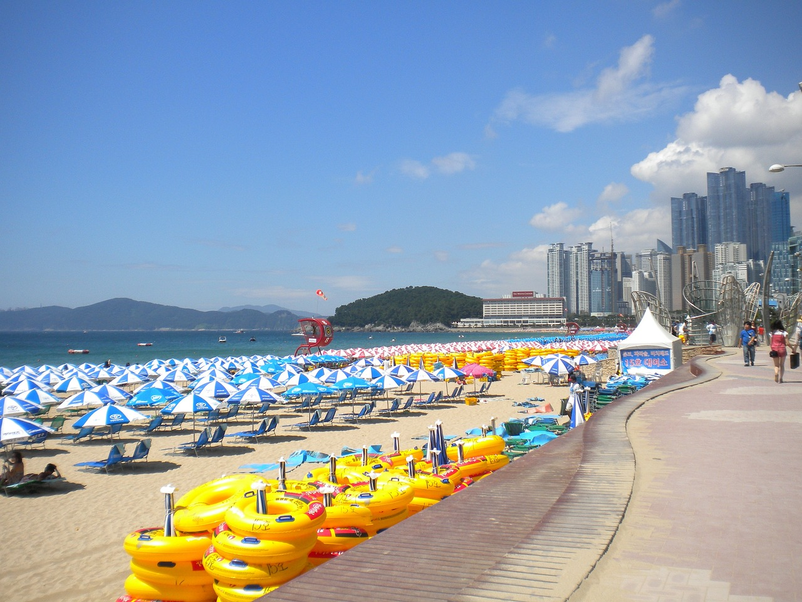
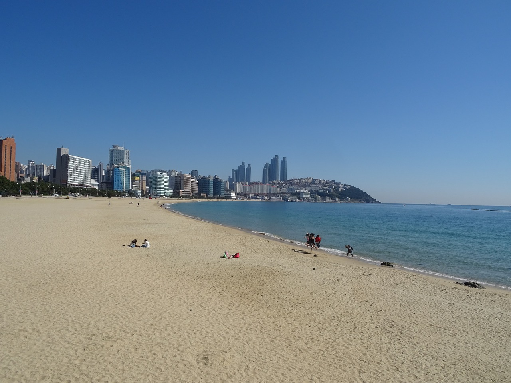
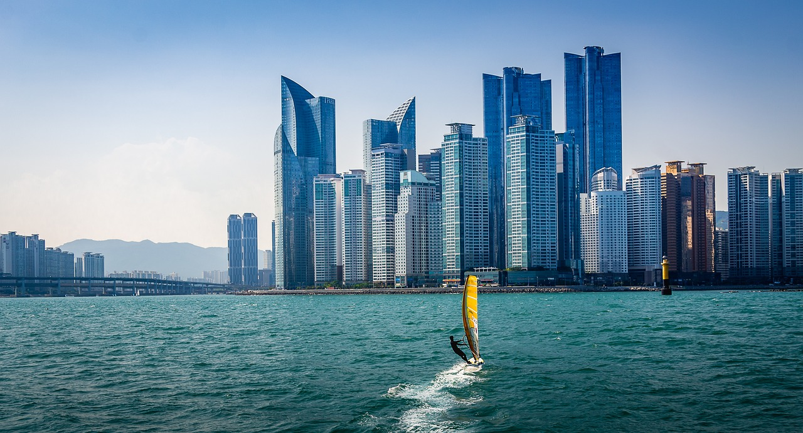

건강한 삶을 위한 기본지식 창고
건강한 삶을 위한 기본지식 창고 지비츠,문구류는 바로여기
지비츠,문구류는 바로여기
해운대해수욕장(海雲臺海水浴場, Haeundae Beach)은 대한민국 부산광역시 해운대구 중동과 우동에 걸쳐서 위치한 해수욕장이다. 모래사장의 총면적은 120,000m2, 길이는 1.5 km, 폭은 70m ~ 90m이다. 이 곳에는 300여개의 편의·숙박시설이 있고, 해수욕장의 가까운 부산조선비치호텔, 동백섬 누리마루(APEC하우스) 등이 있다. 개장기간은 6월초부터 9월말까지로[2], 피서객 인파가 2007년 1천 279만명이고, 2008년 1천 45만명으로 감소했다.2008년 8월 2일 오전 10시부터 7시간 동안 해운대해수욕장에서 비치된 파라솔의 수가 1시간 동안 가장 많은 파라솔이 백사장에 펼쳐진 시점인 오후 4시 총 7937개의 파라솔이 설치된 것으로 집계되었다. 3개월 후 '기네스 세계 레코드' 본사는 파라솔이 세계 공통의 문화가 아니라는 이유로 기네스 기록 등재불가를 통보했다. 2012년 CNN GO가 선정한 한국에서 가봐야 할 아름다운 곳 TOP 50 명단에 37위에 랭크되어 있다.
1월에는 추위를 수영으로 건강한 겨울을 보낸다는 뜻으로 하는 북극곰 수영대회가 열린다. 6월에는 해운대 모래축제가 열린다. 7~8월에는 부산국제요트매치컵대회가 열린다. 8월에는 또한 부산바다축제가 열린다.
해운대해수욕장에서는 이안류가 자주 발생하여 매년 입욕 통제가 되는 경우가 발생하고 있다. 이안류는 해저 언덕 등의 영향으로 발생하는 역파도 현상을 말하는 것으로, 해변으로 밀려든 바닷물이 깊이 패인 지형을 통해 썰물처럼 빠져나가며 급물살을 만들어 해수욕을 즐기는 피서객이 여기에 휩쓸리면 깊은 바다로 끌려가기 때문에 위험하다. 2012년에는 11차례의 이안류가 발생해 418명이 휩쓸렸다가 구조되었으며 2013년에는 무려 13차례나 해운대해수욕장에서 이안류가 발생하여 546명이 이안류에 휩쓸렸다가 구조된 바가 있다. 2014년에는 7월 24일에 이안류가 발생하여 입욕이 통제되기도 하였다. 해운대해수욕장에서 이안류가 자주 발생하는 원인은 기상, 지형, 해상의 여러 원인이 복합적으로 작용했기 때문이다. 해운대해수욕장은 인근 송정해수욕장과 광안리해수욕장과 달리 해안선이 남쪽을 향하고 있다. 인근 두 해수욕장은 해안선이 남동쪽을 향하고 있다. 이 때문에 해운대해수욕장에는 지속적으로 남풍, 남서풍의 바람이 불게 되며 1.5 m 이상의 파도가 해안선의 직각으로 밀려들면서 이안류가 발생하게 된다. 또한 해운대해수욕장의 지속적인 백사장 모래 유실도 해저에 골짜기를 만들어 이안류 발생 횟수를 증가시키는 것으로 보고 있다. 이에 따라 기상청에서는 매년 해운대 해수욕장의 이안류 발생 예측정보를 전 해역에 걸쳐 망루별, 시간별 이안류의 발생 가능성 예측정보를 제공하고 있다. 이안류 예측정보는 오전 9시부터 다음날 오후 6시까지 3시간 간격으로 5단계(매우안전, 안전, 주의, 위험, 매우위험)로 매일 제공된다. 또한 지자체에서는 이안류 발생의 다른 원인으로 판단되고 있는 백사장 모래 유실을 막기 위해 제방을 설치하는 계획도 검토하고 있다.
